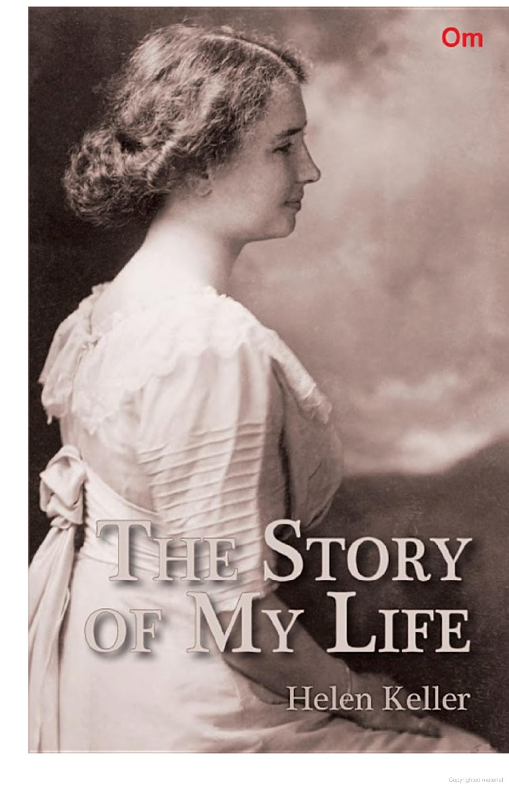

THIS book is in three parts. The first two, Miss Keller's story and the extracts from her letters, form a complete
account of her life as far as she can give it. Much of her education she cannot explain herself, and since a
knowledge of that is necessary to an understanding of what she has written, it was thought best to supplement her
autobiography with the reports and letters of her teacher, Miss Anne Mansfield Sullivan. The addition of a further
account of Miss Keller's personality and achievements may be unnecessary; yet it will help to make clear some of the
traits of her character and the nature of the work which she and her teacher have done.

For the third part of the book the Editor is responsible, though all that is valid in it he owes to authentic
records and to the advice of Miss Sullivan.
The Editor desires to express his gratitude and the gratitude of Miss Keller and Miss Sullivan to The Ladies' Home
Journal and to its editors, Mr. Edward Bok and Mr. William V. Alexander, who have been unfailingly kind and have
given for use in this book all the photographs which were taken expressly for the Journal; and the Editor thanks
Miss Keller's many friends who have lent him her letters to them and given him valuable information; especially Mrs.
Laurence Hutton, who supplied him with her large collection of notes and anecdotes; Mr. John Hitz, Superintendent of
the Volta Bureau for the Increase and Diffusion of Knowledge relating to the Deaf; and Mrs. Sophia C. Hopkins, to
whom Miss Sullivan wrote those illuminating letters, the extracts from which give a better idea of her methods with
her pupil than anything heretofore published.
Messrs. Houghton, Mifflin and Company have courteously permitted the reprinting of Miss Keller's letter to Dr.
Holmes, which appeared in "Over the Teacups," and one of Whittier's letters to Miss Keller. Mr. S. T. Pickard,
Whittier's literary executor, kindly sent the original of another letter from Miss Keller to Whittier.